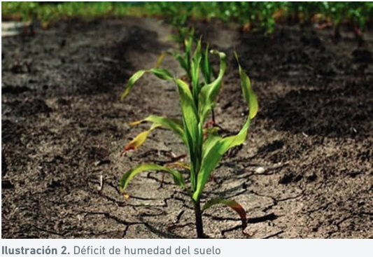

Introducción al Riego
El riego es esencial para la agricultura, abarcando métodos como el riego por inundación, aspersión, goteo y subterráneo, cada uno con sus propias ventajas y desventajas. La elección del método adecuado depende del tipo de cultivo, clima y disponibilidad de agua, y es crucial para el uso eficiente del agua y evitar desperdicios.
La expansión de la cobertura de riego intrapredial, con proyectos que abarcan 250.000 hectáreas, es una parte importante del Plan Nacional de Riego (actividad 22) y del documento Conpes 3926, que busca desarrollar nuevas hectáreas de riego no asociadas a distritos.
El riego juega un papel vital en la producción de alimentos y el cuidado de espacios verdes, siendo fundamental entender sus principios para optimizar el crecimiento y la salud de las plantas.
Normatividad y Marco Legal sobre Manejo de Distritos de Riego
La gestión del agua para la producción sostenible de alimentos y materias primas está regulada por normativas a nivel nacional, departamental y municipal. Estas normativas buscan garantizar el uso eficiente del agua y su distribución equitativa.
Según la FAO (2003), el uso del agua en la agricultura puede contribuir a la producción sostenible, reducción de la pobreza y desarrollo rural a través de:
- Sistemas de aprovechamiento del agua: Agricultura de secano, extracción de agua subterránea y distribución de agua superficial.
- Infraestructura de riego: Desarrollo y mantenimiento de estructuras para la distribución de agua.
- Gestión del agua en tres niveles: Planta, campo y sistema de producción-región productiva.
- Manejo del riesgo: Adaptación y mitigación de riesgos relacionados con la disponibilidad y calidad del agua.
Para enfrentar desafíos en disponibilidad, calidad y costo del agua, es necesaria una modernización progresiva en su manejo, mejorando la respuesta a la demanda y adaptándose a las condiciones locales de clima, ambiente y estructura socioeconómica.
Colombia, destacada por su abundancia hídrica, posee seis veces más recursos hídricos que el promedio mundial y tres veces más que el promedio latinoamericano, con 2,360 km³/año de recursos renovables. Sin embargo, la distribución no es equitativa: la Región Caribe tiene solo el 9.1% de los recursos hídricos, mientras que la Región Amazónica posee el 37%.
El sector agropecuario representa la mayor demanda de agua (46.6%), con 16,770.3 millones de metros cúbicos anuales (datos de 2012).
Este marco legal y normativo es crucial para asegurar el uso sostenible y equitativo del agua, promoviendo así una producción agrícola eficiente y sostenible.
El Subsistema Agua-Suelo-Planta-Atmósfera
El subsistema agua-suelo-planta-atmósfera es un ciclo continuo que implica el flujo de agua desde el suelo hasta la atmósfera, afectando directamente el crecimiento y desarrollo de las plantas. Este proceso comienza con la absorción de agua en estado líquido a través de las raíces, moviéndose por las estructuras celulares del tallo y hojas.
En las hojas, la evaporación ocurre en los espacios intercelulares del mesófilo foliar, utilizando energía calórica disponible. Luego, el agua atraviesa los estomas, guiada por un gradiente de presión de vapor entre el aire y la interfase agua-aire celular, generado principalmente por la radiación solar.
La disponibilidad de agua para las plantas no solo depende del contenido hídrico del suelo (diferencia entre la capacidad de campo y el punto de marchitez permanente), sino también de la capacidad de absorción del sistema radicular y la facilidad con que el agua se mueve a través del suelo y la planta. La velocidad de este movimiento es una función del gradiente total de agua del suelo y de la conductividad hidráulica, que depende del contenido hídrico y las propiedades del suelo.
La morfología, estructura, distribución, profundidad, densidad y dinámica de crecimiento de las raíces son factores clave para la absorción de agua. La capacidad de las raíces para absorber agua de diferentes partes del perfil del suelo, y su respuesta a condiciones de sequía, varía según la especie y variedad de las plantas, influenciada por razones anatómicas y la dinámica de las raíces.
Comprender este subsistema es esencial para optimizar el riego y mejorar la eficiencia del uso del agua en la agricultura, garantizando el crecimiento saludable de las plantas y la sostenibilidad de los recursos hídricos.
Respuesta de los Cultivos ante la Humedad Disponible del Suelo
Parámetros Importantes de la Humedad del Suelo
Para lograr un buen rendimiento de los cultivos, es esencial llevar a cabo un programa de riego adecuado. La eficiencia en la aplicación del agua asegura un desarrollo óptimo y una mayor rentabilidad. Factores como el clima, el tipo de suelo, la especie vegetal, la fase del cultivo y el sistema de riego influyen en este proceso. Además, conocer los parámetros de humedad del suelo es fundamental para determinar cuándo y cuánto regar.
- Punto de Saturación (PS): Es la máxima cantidad de agua que el suelo puede retener, influenciado por el contenido y tipo de arcilla y la materia orgánica. Varía desde menos del 10% en arenas gruesas hasta el 150% en suelos arcillosos o con alta materia orgánica.
- Capacidad de Campo (CC): Representa la cantidad de agua que un suelo puede retener contra la gravedad después de un riego o lluvia. Varía según la textura del suelo: arenosos (5-16%), franco arenosos (10-20%), francos (15-30%), franco arcillosos (25-35%) y arcillosos (30-70%).
- Punto de Marchitez Permanente (PMP): Es el porcentaje de humedad en el cual las plantas se marchitan y no pueden recuperarse, incluso en una atmósfera saturada de humedad.
- Humedad Aprovechable (HA): Es la diferencia entre la CC y el PMP, representando la capacidad del suelo para retener agua utilizable por las plantas.
¿Por Qué Monitorear la Humedad del Suelo?
Monitorear la humedad del suelo es esencial para ayudar a los agricultores a optimizar la producción, conservar agua, reducir impactos ambientales y ahorrar dinero. Ayuda a tomar mejores decisiones sobre la cantidad y el momento del riego, alineando los requerimientos de agua del cultivo con la cantidad aplicada, evitando pérdidas excesivas por percolación o escurrimientos, y reduciendo el riego insuficiente que podría disminuir la producción.
El exceso de riego puede aumentar el consumo de energía, los costos de agua, el movimiento de fertilizantes fuera de la zona radicular, y causar erosión y transporte de químicos a los canales de drenaje. Por otro lado, el riego insuficiente puede reducir la producción de las cosechas.
¿Cómo Monitorear la Humedad del Suelo?
Existen varios métodos para monitorear la humedad del suelo y programar el riego de manera eficiente. La correcta instalación y calibración de estos métodos puede convertirlos en herramientas muy eficaces para manejar el riego. Monitorear la humedad del suelo implica conocer el uso de agua del cultivo, la capacidad de almacenamiento de agua del suelo, la profundidad y características de la zona radicular, permitiendo una gestión óptima del riego.
La optimización del riego requiere aplicar el agua en el momento adecuado y en cantidades adecuadas, evitando excesos y conservando el agua para aumentar la rentabilidad.
Componentes del Ciclo Hidrológico
El ciclo hidrológico es un proceso continuo que describe el movimiento del agua en la Tierra, comenzando con la evaporación y terminando con la precipitación y escorrentía. Este ciclo es fundamental para mantener el equilibrio ecológico y apoyar la vida en nuestro planeta.
Fases del Ciclo Hidrológico
- Evaporación: El agua se evapora desde la superficie del océano, tierra y a través de la transpiración de plantas y sudoración de animales. Este proceso es impulsado principalmente por la radiación solar.
- Condensación: El vapor de agua asciende y se enfría, formando nubes a medida que se condensa en pequeñas gotas de agua.
- Precipitación: Cuando las gotas de agua en las nubes se agrupan y aumentan de tamaño, caen a la superficie terrestre como lluvia, nieve o granizo, dependiendo de la temperatura atmosférica.
- Infiltración: El agua que alcanza el suelo penetra en sus poros, formando agua subterránea. La cantidad de agua que se infiltra depende de la permeabilidad del suelo, la pendiente y la cobertura vegetal.
- Escorrentía: El agua que no se infiltra en el suelo fluye sobre la superficie terrestre hacia ríos, lagos y océanos. La escorrentía es un agente importante de erosión y transporte de sedimentos.
- Circulación Subterránea: El agua se mueve bajo la superficie del suelo, alimentando acuíferos y eventualmente regresando a la superficie en manantiales o alcanzando cuerpos de agua mayores.
- Fusión: Este proceso ocurre cuando la nieve se derrite y se convierte en agua líquida, contribuyendo a los flujos de escorrentía y recarga de acuíferos.
- Solidificación: El agua en la atmósfera se congela, formando nieve o granizo, que eventualmente caerán a la superficie terrestre.
El ciclo se repite continuamente, garantizando la distribución y disponibilidad del agua en el planeta.
Importancia del Ciclo Hidrológico
El ciclo del agua es vital para la vida y el equilibrio de los ecosistemas. La interacción constante entre el agua y los seres vivos asegura la supervivencia de plantas y animales, y el ciclo depende de una atmósfera poco contaminada y agua de buena calidad. La alteración de este ciclo, ya sea por contaminación o cambios climáticos, puede tener consecuencias significativas en el tiempo de evaporación y condensación, afectando todo el sistema hidrológico.
Actividad Módulo 1: Contenido de Humedad del Suelo
Procedimiento Práctico para Determinar el Contenido de Humedad del Suelo
Materiales:
- Valde o Caneca con agua
- 4 Libras de tierra seca
Procedimiento:
- Preparación del Suelo:
- Dividir el suelo en tres partes pequeñas:
- Una parte con tierra seca.
- Otra parte saturada de agua.
- La tercera parte será humedecida gradualmente hasta alcanzar su capacidad de retención de agua.
- Prueba de la Tierra Seca:
- Tomar una porción de tierra seca que quepa en la mano.
- Apretarla y luego soltarla.
- Si la porción se desmorona al soltarla, indica que el suelo tiene un bajo contenido de humedad y necesita riego.
- Prueba de la Tierra Saturada:
- Tomar una porción de tierra saturada de agua.
- Al apretarla, notar cómo el agua se escurre entre los dedos y las manos.
- Este exceso de humedad sugiere que el suelo no necesita riego hasta que su nivel de humedad disminuya.
- Determinación de la Capacidad de Retención de Agua:
- Tomar tierra de la última porción y humedecerla gradualmente.
- Apretarla en la mano mientras se agrega agua poco a poco.
- Cuando se pueda apretar sin que el agua se escurra y al abrir la mano la porción de tierra no se desmorone, sino que permanezca como una masa sólida, entonces se habrá alcanzado la capacidad de retención de agua del suelo.
- Este punto óptimo de humedad del suelo es ideal para un cultivo establecido.
Entrega de Evidencias del Proceso
Se deben presentar registros fotográficos o escritos de cada etapa del proceso, incluyendo las pruebas realizadas y los resultados obtenidos, demostrando la comprensión y ejecución adecuada del método manual para determinar el contenido de humedad del suelo.